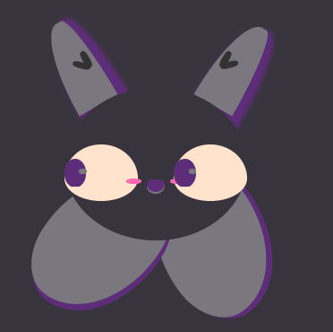
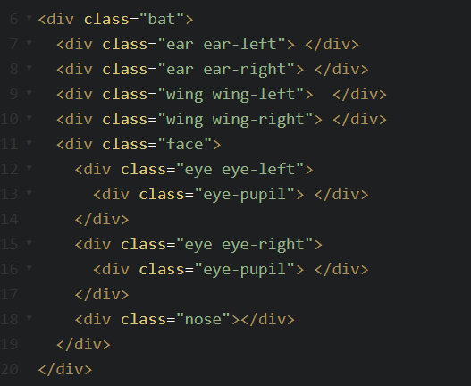
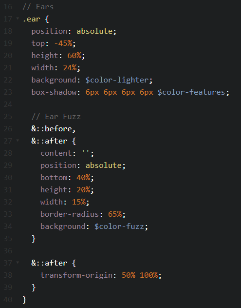

♠CSS Animation♠
Aim & Objectives
Aim
♠To create an animation using CSS Animation; featuring a cute bat character that is dozing off and starting back awake on a loop.
Objectives
- To learn SCCS & CSS3 and expand Understanding
- To research and understand colour schemes better
- To practice the elements required and build the character
- To test the animation and host it on Codepen
What is CSS Animation?
CSS animations make it possible to animate transitions from one CSS style to another fluidly. CSS Animations consist of two components, a style describing the CSS animation and a set of keyframes that indicate the start and end states of the animation's style, as well as possible intermediate waypoints if, as and when required.
Researching CSS Animation & SCSS
CSS Animation animates without the use of Java or Flash – which is not only impressive but offers quite a stable animation as the final output. I must admit, I had a lot of fun when looking for inspiration on CSS Animations (this adorable Submarine being one of my favourites) as there is so many wonderful things that can be done with it.
Once I stopped being in awe of all the cute creatures and beautifully fluid transitions I was witnessing, I turned to W3Schools as my first port of call. This is where I learnt about the keyframes element.

For research into SCSS, I found this great article, which helped me to understand the parent and child element and where I needed to semantically put the code for it to work successfully. As I have prior knowledge in CSS, I just needed to fully grasp the integration of the new rules and features of SCSS. Codepen was also incredibly useful for seeing how this works when applied.
I also used developer.mozilla.org and CSS-tricks to ensure I fully understood the keyframes element and the structure required to build and run a successful animation. As I wanted to create an animated bat that dozed off and startled awake on a loop, I had to figure out which elements needed to do what; Were any stationary? Where did I want the bat to be?
Applying CSS Animation
I needed to structure the bat properly, ensuring I had all the visible elements required. After spending (maybe a little too much time) looking at the structure of a bats face, I decided that I would need three elements as pairs; eyes, ears and wings. I would also need the bat’s overall structure, the face and nose, and any added features.

I also needed to make sure I was naming elements correctly, so it was easier when it came to the styling (a lesson I learnt previously – those damn curly boys!).
Once this was done, I opted for colours that were bat-like (purple is associated with Halloween bats, right?!) and also ones that would compliment the colour scheme on my portfolio website. I intend to have a sub-page with CSS Animations I have made in the future, however I need to build a few more before I apply this change in full!
As it was my first time using CSS Animation, I decided to keep my bat relatively simple, with only two elements that would animate. I also opted to include the background in as part of the animation; allowing me to focus on the individual elements.

I added styling on the ears and eyes, with ear fuzz (yes, that is the scientific name for it) and a glare on the eye pupils. I also used box-shadow to add a shading for the wings, to show they were two individual elements. I also added a small blob on the eyes to add a bit more character to my bat - who is loosely inspired by JiJi from Kiki’s delivery service.
Once I essentially had my bat, it was time to create animations to do what my bat needed; to have droopy eyelids and pupils that dart around once he wakes up again, This involved what I had learned about @keyframes coming into play, to get the timing of the droopy eyelids to work with the shifting pupils.

I aptly named the eyelid animation doze and set it to ease-in to give a soft effect. I set the different timeframes, so I could achieve the dozing affect. I decided on 5 seconds as it was a sleepy animation; although this may seem a little slow; it gave my desired effect. I changed the style of the height over different keyframes over the 5 second period to give the effect of droopy eyelids.

I named the pupil animation wake up and set it to infinite. I did not use ease-in as I wanted to achieve a sudden, darting effect, as if startled awake. I decided to use the transform:translate styling option (as this is used to move an element from its current position). I needed to play around a little to ensure the pupils moved after the eyelids lifted back up – after (a lot) of trial and error I managed to get it running how I wanted.
Evaluation
I really enjoyed learning about SCSS and applying what I had learnt when creating my bat. I wanted to create the bat as I felt it was something that I could show to those in my personal life who aren’t that technologically aware as a demonstration of not only what I can do, but also what you can do through programming.
One of my favourite things that I have discovered through learning CSS Animation and SCSS is using the $variables, specifically $color-name to allocate your colours – this is so much easier than copying and pasting hex codes or playing a small game of memory whilst coding. I have also learnt they can be used in a more advanced way, to create colour palettes for easy reference and styling – which is something I will be doing very soon I assure you!
My CSS Animation
You can see Bartok - My CSS Animated Bat herep>
References
CodePen. (2018). Submarine with CSS. [online] Available at: https://codepen.io/ajerez/pen/EaEEOW [Accessed 4 Feb. 2018].
W3schools.com. (2018). CSS Animations. [online] Available at: https://www.w3schools.com/css/css3_animations.asp [Accessed 2 Feb. 2018].
CSS-Tricks. (2011). animation | CSS-Tricks. [online] Available at: https://css-tricks.com/almanac/properties/a/animation/ [Accessed 1 Feb. 2018].
Oliveira, J. (2011). The ampersand & a killer Sass feature. [online] Joeloliveira.com. Available at: http://www.joeloliveira.com/2011/06/28/the-ampersand-a-killer-sass-feature/ [Accessed 10 Feb. 2018].
MDN Web Docs. (2017). CSS Animations tips and tricks. [online] Available at: https://developer.mozilla.org/en-US/docs/Web/CSS/CSS_Animations/Tips [Accessed 2 Feb. 2018].
Scotch. (2015). Aesthetic Sass 2: Colors and Palettes. [online] Available at: https://scotch.io/tutorials/aesthetic-sass-2-colors [Accessed 5 Feb. 2018].